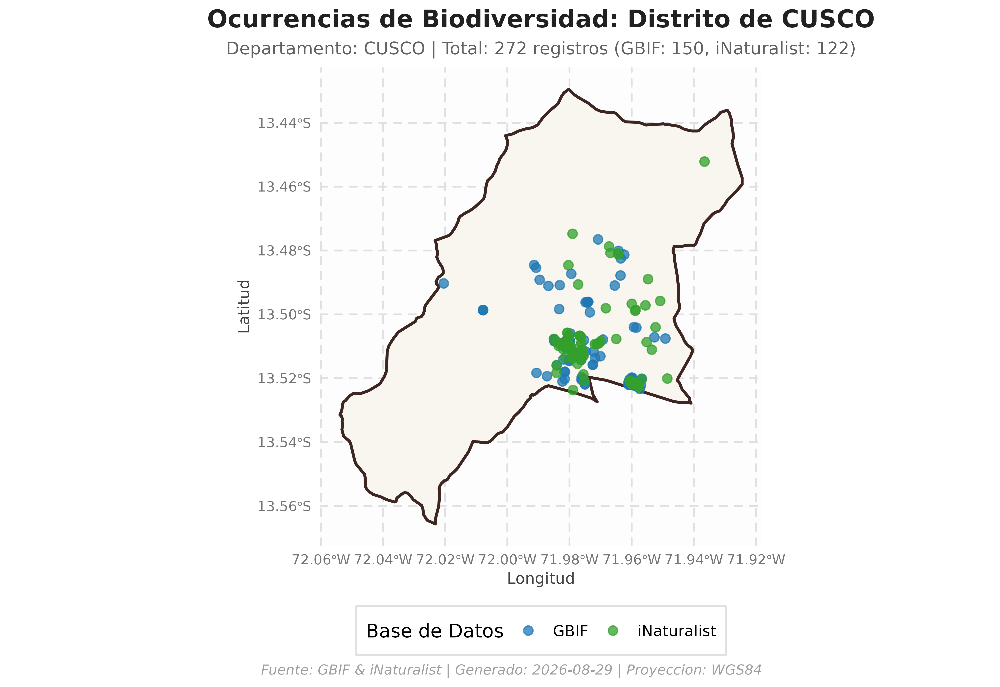

Introducción
peruocc es un paquete en R diseñado para facilitar la
búsqueda, descarga, validación espacial y consolidación de registros de
ocurrencias de biodiversidad (flora y fauna) en el
territorio peruano, tomando como marco de referencia las delimitaciones
político-administrativas oficiales provistas por
geoperu (distritos y provincias).
El paquete integra y estandariza la información proveniente de dos de las plataformas más representativas en biodiversidad: * GBIF (Global Biodiversity Information Facility) * iNaturalist
Instalación y Configuración
Puedes instalar la versión oficial de peruocc desde
CRAN:
install.packages("peruocc")O la versión en desarrollo directamente desde GitHub:
# install.packages("remotes")
remotes::install_github("PaulESantos/peruocc")Carga el paquete en tu sesión de R:
library(peruocc)
#> ── Cargando peruocc ────────────────────────────────────────────────── v0.1.0 ──
#> ✔ geoperu 0.0.1 • Límites cartográficos oficiales del Perú
#> ✔ rgbif 3.8.5 • Extracción de ocurrencias desde GBIF
#> ✔ rinat 0.1.10 • Observaciones ciudadanas de iNaturalist
#> ✔ sf 1.1.2 • Operaciones geométricas y filtros espacialesConfiguración del Directorio de Trabajo (Opcional)
Puedes establecer una ruta personalizada donde se almacenarán las capas en caché y los archivos exportados:
# Configurar carpeta de salida (opcional)
peruocc_data_dir("peruocc-output")Consultas de Ocurrencias
Por defecto, las consultas se ejecutan directamente en memoria
(guardar_resultados = FALSE), lo que agiliza el flujo
interactivo y previene la creación de archivos no deseados en el
disco.
1. Búsqueda a Nivel de Distrito
Para consultar registros en un distrito específico (por ejemplo, el distrito de Cusco, en la provincia y departamento de Cusco):
resultado_cusco <- buscar_especies_distrito(
distrito = "Cusco",
departamento = "Cusco",
provincia = "Cusco",
grupo = "flora", # "flora", "fauna" o NULL
limite_por_api = 150
)
#>
#> ── Búsqueda Integrada: CUSCO (DISTRITO) ────────────────────────────────────────
#> • Departamento: Cusco
#> • Provincia: Cusco
#> • Grupo: flora
#> ℹ Cargando límites de CUSCO desde el caché local...
#> ℹ [GBIF] Iniciando búsqueda de ocurrencias...
#> ✔ Polígono simplificado con éxito a tolerancia de 100 metros (WKT: 1153 caracteres).
#> ℹ [GBIF] Filtrando por reino Plantae (Flora).
#> ℹ [GBIF] Consultando registros dentro del polígono de CUSCO (límite: "150")...
#> ✔ [GBIF] Búsqueda finalizada. Se filtraron 150 registro(s) que caen dentro del polígono seleccionado.
#> ℹ [iNaturalist] Iniciando búsqueda de ocurrencias...
#> ℹ [iNaturalist] Filtrando por reino Plantae (Flora).
#> ℹ [iNaturalist] Consultando registros dentro de la caja delimitadora de CUSCO (límite: "150")...
#> ℹ [iNaturalist] Se descargaron 150 registros en la caja delimitadora. Aplicando filtro espacial...
#> ✔ [iNaturalist] Búsqueda finalizada. 122 de 150 registros caen dentro del polígono seleccionado.
#> ✔ Consolidación exitosa. Total de registros unificados: 272
#>
#> ── Resumen de Registros ──
#>
#> • GBIF: 150 registro(s)
#> • iNaturalist: 122 registro(s)
#> ✔ Total consolidado: 272 registro(s)2. Búsqueda a Nivel de Provincia
Para consultar una provincia completa (donde peruocc
disuelve automáticamente las geometrías distritales):
resultado_urubamba <- buscar_especies_provincia(
provincia = "Urubamba",
departamento = "Cusco",
grupo = "fauna",
limite_por_api = 200
)
#>
#> ── Búsqueda Integrada: URUBAMBA (PROVINCIA) ────────────────────────────────────
#> • Departamento: Cusco
#> • Grupo: fauna
#> ℹ Procesando 10 lotes espaciales (distritos): "MARAS", "HUAYLLABAMBA", "YUCAY", "CHINCHERO", "OLLANTAYTAMBO", "MACHUPICCHU", and "URUBAMBA"
#> ✔ Polígono simplificado con éxito a tolerancia de 100 metros (WKT: 1213 caracteres).
#> ✔ Lote 1/10 [MARAS]: 190 (GBIF) + 90 (iNat) = 280 registros.
#> ✔ Polígono simplificado con éxito a tolerancia de 100 metros (WKT: 1211 caracteres).
#> ✔ Lote 2/10 [HUAYLLABAMBA]: 200 (GBIF) + 98 (iNat) = 298 registros.
#> ✔ Polígono simplificado con éxito a tolerancia de 100 metros (WKT: 608 caracteres).
#> ✔ Lote 3/10 [YUCAY]: 200 (GBIF) + 84 (iNat) = 284 registros.
#> ✔ Polígono simplificado con éxito a tolerancia de 100 metros (WKT: 865 caracteres).
#> ✔ Lote 4/10 [CHINCHERO]: 200 (GBIF) + 190 (iNat) = 390 registros.
#> ✔ Polígono simplificado con éxito a tolerancia de 300 metros (WKT: 898 caracteres).
#> ✔ Lote 5/10 [OLLANTAYTAMBO]: 166 (GBIF) + 14 (iNat) = 180 registros.
#> ✔ Polígono simplificado con éxito a tolerancia de 100 metros (WKT: 819 caracteres).
#> ✔ Lote 6/10 [OLLANTAYTAMBO]: 200 (GBIF) + 111 (iNat) = 311 registros.
#> ✔ Lote 7/10 [OLLANTAYTAMBO]: 7 (GBIF) + 0 (iNat) = 7 registros.
#> ✔ Polígono simplificado con éxito a tolerancia de 100 metros (WKT: 1157 caracteres).
#> ✔ Lote 8/10 [OLLANTAYTAMBO]: 200 (GBIF) + 101 (iNat) = 301 registros.
#> ✔ Polígono simplificado con éxito a tolerancia de 300 metros (WKT: 897 caracteres).
#> ✔ Lote 9/10 [MACHUPICCHU]: 200 (GBIF) + 197 (iNat) = 397 registros.
#> ✔ Polígono simplificado con éxito a tolerancia de 100 metros (WKT: 1466 caracteres).
#> ✔ Lote 10/10 [URUBAMBA]: 200 (GBIF) + 180 (iNat) = 380 registros.
#> ✔ Consolidación exitosa. Total de registros unificados: 2828
#>
#> ── Resumen de Registros ──
#>
#> • GBIF: 1763 registro(s)
#> • iNaturalist: 1065 registro(s)
#> ✔ Total consolidado: 2828 registro(s)3. Filtro por Especie o Taxón Específico
También es posible restringir la búsqueda a un taxón en particular
utilizando el argumento nombre_cientifico:
resultado_jaguar <- buscar_especies_distrito(
distrito = "Tambopata",
departamento = "Madre de Dios",
provincia = "Tambopata",
nombre_cientifico = "Panthera onca",
limite_por_api = 50
)
#>
#> ── Búsqueda Integrada: TAMBOPATA (DISTRITO) ────────────────────────────────────
#> • Departamento: Madre de Dios
#> • Provincia: Tambopata
#> • Taxón: Panthera onca
#> ℹ Cargando límites de MADRE DE DIOS desde el caché local...
#> ℹ [GBIF] Iniciando búsqueda de ocurrencias...
#> ✔ Polígono simplificado con éxito a tolerancia de 8100 metros (WKT: 379 caracteres).
#> ℹ [GBIF] Resolviendo taxonomía para "Panthera onca"...
#> ✔ [GBIF] Taxón resuelto: Panthera onca (Linnaeus, 1758) (Key: 5219426, Rank: SPECIES)
#> ℹ [GBIF] Consultando registros dentro del polígono de TAMBOPATA (límite: "50")...
#> ✔ [GBIF] Búsqueda finalizada. Se filtraron 21 registro(s) que caen dentro del polígono seleccionado.
#> ℹ [iNaturalist] Iniciando búsqueda de ocurrencias...
#> ℹ [iNaturalist] Consultando registros dentro de la caja delimitadora de TAMBOPATA (límite: "50")...
#> ℹ [iNaturalist] Se descargaron 50 registros en la caja delimitadora. Aplicando filtro espacial...
#> ✔ [iNaturalist] Búsqueda finalizada. 8 de 50 registros caen dentro del polígono seleccionado.
#> ✔ Consolidación exitosa. Total de registros unificados: 29
#>
#> ── Resumen de Registros ──
#>
#> • GBIF: 21 registro(s)
#> • iNaturalist: 8 registro(s)
#> ✔ Total consolidado: 29 registro(s)Estructura del Objeto Consolidado
Las funciones de búsqueda retornan un objeto de tipo
list estructurado con 4 componentes clave:
names(resultado_cusco)
#> [1] "unidad_sf" "distrito_sf" "ocurrencias" "resumen" "parametros"
#> [1] "unidad_sf" "ocurrencias" "resumen" "parametros"| Componente | Tipo | Descripción |
|---|---|---|
unidad_sf |
sf (WGS84) |
Polígono oficial validado y proyectado en EPSG:4326. |
ocurrencias |
peruocc_tbl / data.frame
|
Registros estandarizados bajo el estándar Darwin Core. |
resumen |
list |
Estadísticas de la consulta (conteo total, por fuente, reinos). |
parametros |
list |
Metadatos y filtros utilizados en la llamada (fechas, límites). |
Inspección de Registros
# Vista previa de las primeras ocurrencias
head(resultado_cusco$ocurrencias[, c("scientificName", "source", "eventDate", "decimalLatitude", "decimalLongitude")])
#> # A tibble: 6 × 5
#> scientificName source eventDate decimalLatitude decimalLongitude
#> <chr> <chr> <chr> <dbl> <dbl>
#> 1 Passiflora pi… GBIF 2026-01-… -13.5 -72.0
#> 2 Salix babylon… GBIF 2026-01-… -13.5 -72.0
#> 3 Tecoma stans … GBIF 2026-01-… -13.5 -72.0
#> 4 Austrocylindr… GBIF 2026-01-… -13.5 -72.0
#> 5 Cirsium vulga… GBIF 2026-01-… -13.5 -72.0
#> 6 Cantua buxifo… GBIF 2026-01-… -13.5 -72.0Visualización y Exportación
Visualización Rápida
Puedes generar inmediatamente un mapa temático con
ggplot2:
# Visualizar mapa coloreando por repositorio de origen (GBIF vs iNaturalist)
mapa <- graficar_ocurrencias(resultado_cusco, color_por = "source")
print(mapa)
Exportación a Disco
Para guardar los datos en formatos estándar (CSV,
GeoJSON y manifiesto JSON de
reproducibilidad):
# Exportar resultados a disco
exportar_resultados(resultado_cusco)
#> ✔ Registros tabulares guardados en: /home/runner/work/peruocc/peruocc/vignettes/peruocc-output/processed/ocurrencias_20260829T165238Z_distrito_cusco_flora.csv
#> ✔ Capa espacial GeoJSON guardada en: /home/runner/work/peruocc/peruocc/vignettes/peruocc-output/processed/ocurrencias_20260829T165238Z_distrito_cusco_flora.geojson
#> ✔ Manifiesto JSON guardado en: /home/runner/work/peruocc/peruocc/vignettes/peruocc-output/processed/manifiesto_20260829T165238Z_distrito_cusco_flora.jsonSiguientes Pasos
Para profundizar en las capacidades de peruocc, consulta
las viñetas especializadas:
- Flujo Espacial y Filtrado Topológico Riguroso: Detalles de simplificación métrica UTM, corrección CCW y estrategias de partición.
- Búsqueda con Polígonos Personalizados: Consultas con shapefiles, buffers, áreas naturales protegidas y capas vectoriales propias.
- Configuración, Exportación y Visualización: Integración con SIG (QGIS/ArcGIS), personalización de mapas con ggplot2 y manifiestos de auditoría científica.